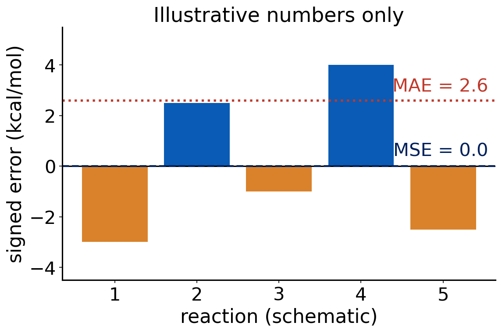

Lecture 7 · Debrief Exp. 1–2 · How we test a functional
Basis-set convergence, the Jacob’s ladder exercise, benchmarking, and a first look at Experiment 3
Advanced Physical Chemistry · Florida Institute of Technology
Debrief: Experiment 1
Your results
[Live: open Class results → Experiment 1 heatmap]
- Signed error of each method at each basis set, for (HCl)₂ → 2 HCl
- Look for patterns before we explain them
[Insert class plot: error vs. basis set]
[Insert class plot: signed error of (HCl)₂ → 2 HCl vs. basis set (def2-SVP, def2-TZVP, def2-QZVP and cc-pVDZ, cc-pVTZ, cc-pVQZ), one line per method]
Questions to ask: which lines flatten out? Which methods never reach the reference?
Error versus ζ: what you probably saw
- Going from double-ζ to triple-ζ changes the result a lot
- Triple-ζ to quadruple-ζ changes it much less
- Curves flatten: the basis-set limit is approaching
- Double-ζ is not converged; quadruple-ζ is close to the CBS limit
- The flattening is the variational principle at work: more functions, lower energy, smaller change
Hartree–Fock never gets there
- (HCl)₂ is held together largely by dispersion
- HF has no electron correlation, so it has no dispersion
- A bigger basis cannot add a physical effect the method does not contain
- The HF curve flattens, but at the wrong answer

Method error and basis error are different things. A basis set only converges toward the limit of its method.
def2 versus cc-pVnZ
- Two families at each ζ: Karlsruhe def2 and Dunning cc-pVnZ
- cc-pVnZ sets were designed for correlated wave-function methods
- def2 sets were designed with DFT and HF in mind
- Typical behavior: for DFT, def2 is often as good or better at the same ζ and usually cheaper
- The two families are not interchangeable at a given ζ: compare sizes, not just names
Cost: the exponent you measured
- Formal scaling of hybrid DFT and HF integrals is about N⁴ in the number of basis functions
- Fitting time versus N_bf, you probably got a smaller exponent
- Why? Integral screening, density fitting, and small molecules where overhead dominates
- Small N is not the asymptotic regime
[Insert class plot: timing vs. basis functions]
[Insert class plot: wall time vs. number of basis functions (log-log) for each method, with the fitted exponent]
Use it to discuss which method is cheapest and how steeply cost rises from def2-TZVP to def2-QZVP.
Quick question
Cost rises steeply with ζ. You have to run many jobs in 10 minutes each.
Which basis-set level would you pick for routine work, and why?
Triple-ζ (def2-TZVP): most of the convergence for a fraction of the cost. That is why it is the default for Experiments 3–6 and 9.
Takeaway: Experiment 1
- Always check basis-set convergence before comparing methods
- Triple-ζ is the usual accuracy/cost compromise
- Missing physics (dispersion in HF) is not repaired by a bigger basis
Debrief: Experiment 2
Common misclassifications
- Range-separated hybrids (ωB97M-V, M11): they are hybrids, with the HF fraction growing with distance
- -V versus -D: -V (VV10, -rV) is a nonlocal correlation kernel; -D4 is an add-on pairwise correction
- Meta-GGA versus hybrid meta-GGA: look for HF exchange
- Functionals named after their parameters (M06-2X: 2X means twice the HF exchange of M06)
The 16 methods on the ladder
| Rung | Methods |
|---|---|
| LSDA | SPW92 |
| GGA | BP86, BLYP, PBE, PBE-D4 |
| meta-GGA | SCAN, B97M-V |
| hybrid GGA | B3LYP, B3LYP-D4, B3PW91, PBE0 |
| hybrid meta-GGA | M06-2X, M11, MN15, ωB97M-V |
| wave function | HF |
Dispersion flags: -D4 (PBE-D4, B3LYP-D4); nonlocal VV10 (B97M-V, ωB97M-V). Range-separated: M11, ωB97M-V.
How we test a functional
Why benchmark?
- A functional is an approximation, with no guarantee of accuracy
- Papers report good results on selected examples
- A benchmark asks: how does it do on many reactions, with trusted answers?
- This lab is a small benchmark you run yourselves
Where the reference values come from
- CCSD(T) at the complete-basis-set limit: “gold standard” for small and medium molecules
- Experiment corrected to electronic energies (class 13), for cases where theory cannot reach
- Reference quality limits what we can conclude: the reference must be much better than the method tested
Benchmark databases
- GMTKN55: 55 subsets, about 1500 relative energies (Goerigk 2017)
- MGCDB84: 84 subsets, used to compare many functionals (Mardirossian 2017)
- Minnesota databases: used to train and test the Minnesota functionals
- Exp. 1 uses the NCCE30 subset, and later experiments draw on other subsets
Reaction types
- Thermochemistry (atomization energies, bond energies)
- Barrier heights
- Noncovalent interactions
- Isomerization energies
- Conformer energies
- Transition-metal energetics
Each type stresses a different weakness. A functional can be good on one and bad on another.
Error statistics
Signed error of one reaction (ΔE = Σ νᵢEᵢ, ν > 0 products, ν < 0 reactants):
\[ \varepsilon = \Delta E_{\text{calc}} - \Delta E_{\text{ref}} \]
- MSE = mean of ε: sign shows systematic over- or under-binding
- MAE = mean of |ε|: typical size of the error
- Max error = largest |ε|: the worst case
- Relative error = ε / ΔE_ref: fair across reactions of different size
Why report more than one number

- Positive and negative errors can cancel in the MSE
- A small MSE with a large MAE means scatter, not accuracy
Quick question
A functional has MSE ≈ 0 over your four reactions.
Is it accurate?
Not necessarily. Errors of both signs cancel. Check the MAE and the maximum error, and look at the individual reactions.
Chemical accuracy
- 1 kcal/mol is the usual target for useful thermochemistry
- 1 Eh = 627.5095 kcal/mol, so 1 kcal/mol is about 1.6 mEh of a total energy of hundreds of Eh
- Most approximate functionals do not reach it on all reaction types
- A single number never tells the whole story: ask for what, with which basis, and which reactions
Report signed error, MAE and the worst case, and always say which reactions they average over.
Experiment 3 briefing
Goal
Experiment 3: Applying DFT to Organic Chemistry, Part A
- Test 16 methods on four “easy” organic reactions
- Same basis set for all (def2-TZVP), so differences come from the method
- Also record the cost per SCF cycle
The four reactions
| Reaction | Ref. (kcal/mol) |
|---|---|
| 3a ethane: staggered → eclipsed | 2.73 |
| 3b methanol: staggered → eclipsed | 1.01 |
| 3c butane-1,4-diol: B1 → B43 | 3.29 |
| 3d cis- → trans-pent-2-ene | −1.15 |

Methods and jobs
- 16 methods: SPW92, BP86, BLYP, PBE, PBE-D4, SCAN, B97M-V, B3LYP, B3LYP-D4, B3PW91, PBE0, M06-2X, M11, MN15, ωB97M-V, HF
- Basis set: def2-TZVP
- 8 molecules × 16 methods = 128 short jobs
- Submit in batches (shared-machine guide)
- All molecules are singlets; line 2 of each .xyz file is “charge multiplicity”
Why these reactions are “easy”
- Same bonds before and after: only geometry changes
- Isodesmic-like: the same kind of electronic error appears on both sides and cancels
- Do not expect a method’s error here to predict its error when bonds break (Experiments 4–5)
Pitfalls
- Copy all digits of each total energy: reaction energies are small differences of large numbers
- Use signed ν: ΔE = Σ νᵢEᵢ, then × 627.5095 kcal/mol per Eh
- Check that the right method name is in the job (-D4 variants!)
- Record SCF cycles and wall time for every job
Predictions to lock
Before you run anything:
- Which method will have the smallest error overall?
- Which will be the worst, and why?
- Which will be the most expensive per SCF cycle?
Write predictions first. Experiments teach most when you can compare with what you expected.
Before next class
- Run the jobs, enter the results, submit the JSON file by the Microsoft Form (Florida Tech email)
- Next class: debrief Experiment 3, then dispersion
References
- Goerigk, L. et al. Phys. Chem. Chem. Phys. 19 (2017): GMTKN55.
- Mardirossian, N.; Head-Gordon, M. Mol. Phys. 115 (2017): MGCDB84 and a survey of functionals.
- Weigend, F.; Ahlrichs, R. Phys. Chem. Chem. Phys. 7 (2005): def2 basis sets.
- Dunning, T. H. J. Chem. Phys. 90 (1989): cc-pVnZ basis sets.
- pchem2 textbook: https://peverati.github.io/pchem2/

CHM 5111 · Advanced Physical Chemistry · Florida Institute of Technology